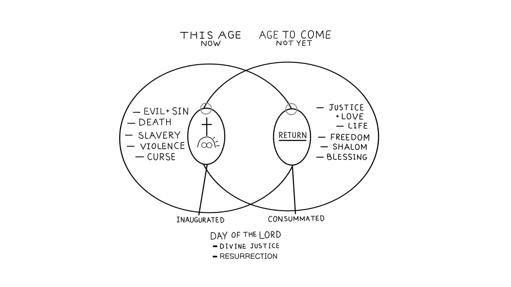

Sessão 11: Esta Era e a Era VindouraSession 11: This Age and the Age to Come
Principais LiçõesKey Takeaways
- No solapamento das eras, Jesus é Rei, e sua ressurreição foi uma prévia do poder divino que ele demonstrará ao refazer toda a criação.In the overlap of the ages, Jesus is King, and his resurrection was a preview of the divine power he will demonstrate when he remakes all creation.
Continuação de Efésios 1:15-23Continuation of Ephesians 1:15-23
O diagrama desta sessão retrata as esferas da era atual e da era vindoura, e demonstra como as duas se fundiram na morte e ressurreição de Jesus. A “era presente” e a “era vindoura” se sobrepõem: o poder de Deus já invadiu o presente pela ressurreição, mas sua plenitude ainda aguarda. Viver “entre os tempos” significa que os crentes já participam da nova criação enquanto esperam sua consumação.This session's diagram depicts the spheres of the current age and the age to come and demonstrates how the two merged in the death and resurrection of Jesus. The "present age" and "age to come" overlap: God's power has already invaded the present through the resurrection, but its fullness awaits. Living "between the times" means believers already participate in new creation while awaiting its consummation.
Pergunta de ReflexãoReflection Question

Paulo ensina que vivemos na sobreposição entre esta era e a era vindoura, e que Jesus já está reinando como Rei. Essa é uma ideia nova para você ou não? Como você experimenta a realidade do presente ou da “era sombria” em sua vida agora?Paul teaches that we live in the overlap between this age and the age to come and that Jesus is already reigning as King. Is this a new idea for you or not? How do you experience the reality of the present or “dark age” in your life now?